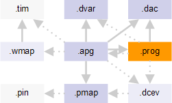

APG program file
The APG program file contains the actual code from which the test pattern is compiled. It may also contain reusable maintenance operations.

The program file has the .prog file name extension. It is referenced from the APG pattern file with the :apgProgram: keyword.
The code is written in a subset of the C language, as described in APG program file syntax. The available operators are described in Operators.
The program file must contain one main() function and can contain any number
of subroutines that are called by name from main(). It can also contain device
parameters from the Device architecture file.
Maintenance routines
Maintenance routines are subroutines that are called for refresh maintenance operations. They are defined in the APG program file like normal subroutines. Maintenance routines must not expect parameters to be passed to them.
If an APG program file contains just a maintenance routine (that is, no
main() function), this routine is compiled into a reusable maintenance routine.
Example
// solid.prog
#include "../../device_defs/access_defs/ddr3_operations.inc"
#include "../basic_access_sequences.inc"
main ()
{
// for debugging purposes un-comment the next 3 lines for a small core...
#define zStop 4
// #define yStop 64
// #define xstop 128
for (bank=zStart; bank<zStop; bank+=1)
{
WriteBackground(bank,DW1,DW2,DW3,DW4,DW5,DW6,DW7,DW8);
ReadBackground(bank,DW1,DW2,DW3,DW4,DW5,DW6,DW7,DW8);
}
for (bank=zStart; bank<zStop; bank+=1)
{
WriteBackground(bank,IDW1,IDW2,IDW3,IDW4,IDW5,IDW6,IDW7,IDW8);
ReadBackground(bank,IDW1,IDW2,IDW3,IDW4,IDW5,IDW6,IDW7,IDW8);
}
pad(EndProgPad){}
}
//*************************************************/
//**** Subroutines ********************************/
//*************************************************/
EndProgPad()
{
CLK(); CTRL(1,1); DES(); DBUS_IDLE();
}Functional changes
- Introduced before SmarTest 6.3.2